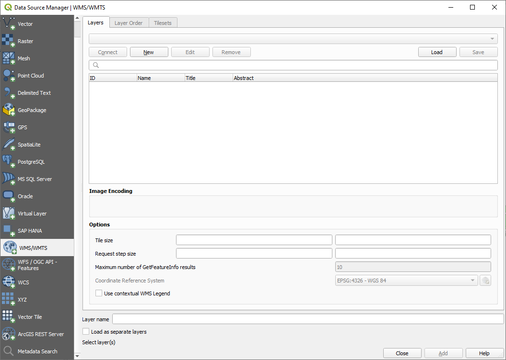
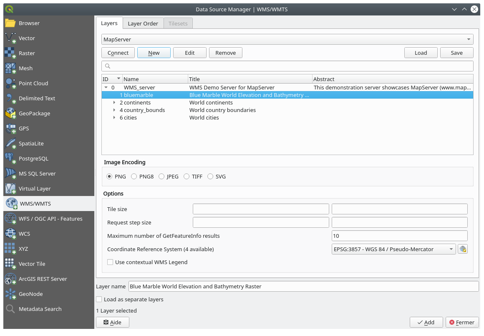

重要
翻訳は あなたが参加できる コミュニティの取り組みです。このページは現在 100.00% 翻訳されています。
10.1. レッスン: Web Mapping Service
Web Mapping Service (WMS) は、リモートサーバ上でホストされたサービスです。ウェブサイトと同じ様に、サーバーへ接続することでアクセスができます。QGIS を使用すると、既存の地図に直接 WMS をロードできます。
プラグインのレッスンから、例えばGoogleから新しいラスタ画像をロードできることを記憶しているでしょう。しかし、これは一度きりの処理です：画像はダウンロードしたら変更されません。WMSは、地図上でパンや拡大すると自動的に表示が更新されるライブサービスであるところが異なります。
このレッスンの目標: WMSを使用して制限を知ること。
10.1.1. ★☆☆ （初級レベル） 理解しよう: WMSレイヤを読み込む
この演習では、コースの開始時に作られた基本地図を使用するか、または単に新しい地図を開始し、その中にいくつかの既存のレイヤを読み込むことができます。この例では、新しい地図を使用して、元の places 、 landuse および protected_areas レイヤをロードし、シンボルを調整しました：
{kind=link}
新しい地図にこれらのレイヤを読み込みます。またはこれらのレイヤを表示のみ行いオリジナルの地図を使用します。
WMSレイヤの追加を開始する前に、"オンザフライ" 投影を無効にします( タブで、 CRSなし（または未知/非地球） をチェックします。これにより、レイヤが正しく重ならなくなることがありますが、後で修正しますので安心してください。
WMSレイヤを追加するには、
 ボタンをクリックして データソースマネージャ ダイアログを開き、
ボタンをクリックして データソースマネージャ ダイアログを開き、 WMS/WMTS タブを有効にしてください。
WMS/WMTS タブを有効にしてください。 コースの冒頭でSpatiaLiteまたはGeoPackageデータベースに接続した方法を思い出してください。 landuse 、 buildings 、および roads レイヤは、１つのデータベース内に格納されています。これらのレイヤを使用するには、まずそのデータベースに接続する必要がありました。WMSを使用するレイヤは、リモートサーバー上にあることを除いて、同様です。
WMSへの新しい接続を作成するには、 新規 ボタンをクリックしてください。
続けるにはWMSアドレスが必要です。インターネットには利用できる無料のWMSサーバがいくつかあります。そのうちのひとつは terrestris 、で OpenStreetMap データセットを使用しています。
このWMSを利用するには、このように、今表示しているダイアログで設定します。

Name フィールドの値は
terrestrisにします。URL フィールドの値は
https://ows.terrestris.de/osm/serviceにします。
OK をクリックします。リストされている新しいWMSサーバが表示されます。

接続 をクリックしてください。すると下のリストに、これらの新しいエントリがロードされるはずです:
これらはこのWMSサーバーにホストされているすべてのレイヤです。
OSM-WMS レイヤを一度クリックします。デフォルトで使われる 座標参照系 が表示され、データセットがサポートしている CRS の数が表示されます:

私たちの地図には``EPSG:4326 - WGS 84`` は使わないので、ニーズに合うものを探しましょう。
 CRSを選択 ボタンをクリックします。標準の 座標参照系選択 ダイアログが表示され、データが公開されているすべてのCRSが表示されます。
CRSを選択 ボタンをクリックします。標準の 座標参照系選択 ダイアログが表示され、データが公開されているすべてのCRSが表示されます。私たちには 投影された CRSが必要なので、
EPSG:3857の WGS 84 / Pseudo-Mercator を選択してみましょう。一番上の フィルタ ウィジェットを使うことができます。
フィルタ ウィジェットを使うことができます。
OK をクリックします。入力したものに関係した座標参照系が変わりました。
Add をクリックし、 レイヤ名` を使ってレイヤをプロジェクトに読み込みます（デフォルトは OpenStreetMap WMS - by terrestris）。
自動的に閉じないときは データソースマネージャ ダイアログを閉じてください
レイヤ パネルで、それをリストの最下部にクリック＆ドラッグします。
レイヤを全体的に表示するには、ズームアウトします。レイヤが正しく配置されていないことがわかります（アフリカの西に近い）。これは、「オンザフライ」投影が無効になっているためです。

その投影を再度有効にしましょう。ただし OpenStreetMap WMS レイヤーと同じ投影を使用すること。それは WGS 84/擬似メルカトル です。
タブを開きます
Uncheck CRSなし（または未知/非地球） のチェックを外します
リストから WGS 84 / 疑似メルカトル を選択します。

OK をクリックします。
次に、 レイヤ パネルで自分のレイヤの一つを右クリックして、 レイヤの領域にズーム をクリックします。すると、Swellendam 領域が表示されるはずです:

WMSレイヤの街路と私たちの街路がどれほど重なっているかに注目してください。それは良い兆候です！
WMSの性質と限界
今までに、このWMSレイヤはその中に実際に多くの地物を持っていることに気づいたかもしれません。それは道路、河川、自然保護区、などなどがあります。しかも、それはベクターで構成されているように見えるにもかかわらず、ラスターのようですが、そのシンボルを変更できません。何故でしょうか？
これがWMSが動作する方法です：この地図は、紙面の通常の地図のように、画像として受け取っています。普段使うのは、QGISが地図としてレンダリングする、ベクタレイヤです。しかしWMSを使うと、それらのベクタレイヤはWMSサーバー上にあり、地図としてレンダリングされ、画像としてその地図が送信されます。QGISではこの画像を表示できますが、すべてのことはサーバー上で処理されるため、そのシンボルは変更できません。
これはいくつかの利点を有しています。なぜならシンボルを心配する必要はありません。すでにできあがっていますし、的確に設計されたWMS上で見栄え良くなるはずです。
他方、気に入らなかったとしてもシンボルは変更できません。そして何かがWMSサーバー上で変更されると、それらは地図上でも同様に変更されます。ときどき代わりにWeb地物サービス（WFS）を使いたくなるのはこのためです。それはWMSスタイルの地図の一部としてではなく、別のベクタレイヤを与えます。
ただし、これは次のレッスンでカバーされます。まず、別のWMSレイヤーを追加しましょう。
10.1.2. ★☆☆ （初級レベル） 自分でやってみよう:
次の URL にある、
eAtlasWMS サーバーを追加します：https://maps.eatlas.org.au/maps/wmsマップに World: Hillshading レイヤを読み込みます。
その エンコーディング を JPEG に、その タイルサイズ オプションを
200×200に設定して、読み込みを速くしたくなるかもしれません。マップはこのようになるはずです（レイヤーの順序を変えたり、透過率を適用する必要があるかもしれません）：

Answer
データソースマネージャのWMS/WMTSタブに移動し、新しい接続エントリーを作成します
- テキストボックスを使って、レイヤのリストをフィルタし、対応するレイヤを選択します
そのCRSを他のマップと同じように EPSG:3857 - WGS 84 / Pseudo Mercator にチェック/変更することを忘れないでください。

レイヤが読み込まれた後、その Opacity 値を変更することができます（透過率 プロパティタブの下）。
10.1.3. ★★★ （上級レベル） 自分でやってみよう:
WMSを使用する難しさの一部は、良い（無料）サーバーを見つけることです。
新しいWMSを directory.spatineo.com （またはオンラインの他の場所）で見つけてください。それは、関連する料金や制限がなく、Swellendam の研究領域をカバーしている必要があります。
WMSを使用するために必要なことだけでそのURL（と説明の好ましいいくつかの並べ替え）であることを忘れないでください。
Answer
Spatineoは、OGCデータを検索できる多くの場所の一つです。テキストエリアに名前、キーワード、関心のある場所を入力し、検索結果が表示されるか確認してください。このレッスンでは、WMSのみを含むように結果をフィルタしたいと思われるかもしれません。
多くのWMSサーバーが常に利用可能ではないことにお気づきかもしれません。これは一時的な場合もあれば、永続的な場合もあります。執筆時点で動作していたWMSサーバーの例は、https://demo.mapserver.org/cgi-bin/wms?SERVICE=WMS&VERSION=1.3.0&REQUEST=GetCapabilities の MapServer Demonstration Server WMSです。これは料金を必要とせず、アクセス制限もなく、グローバルです。したがって、要件を満たしています。しかし、これは単なる一例であることに留意してください。他にもたくさんのWMSサーバーがあります。
10.1.4. ★★★ （上級レベル） 自分でやってみよう:
MapServer Demonstration Server から bluemarble レイヤーを追加してください。これは私たちの調査地域に適したデータセットでしょうか？
Answer
他のWMSレイヤをすべて非表示にして、バックグラウンドで不必要にレンダリングされないようにします。
前と同じ方法で、新しいサーバーとそのサーバー上でホストされている適切なレイヤを追加します:
 Swellendam エリアを拡大すると、このデータセットの解像度が低いことに気づくでしょう:
そのため、今回の地図にはこのデータを使わない方がよいでしょう。Blue Marbleのデータは、地球規模や国土規模での使用に適しています
10.1.5. 結論
WMSを使用して、既存の地図データのための背景として、非アクティブ地図を追加できます。
10.1.6. より詳しく知りたい場合は
10.1.7. 次は?
背景として動かない地図を追加しましたが、地物（例えば以前に追加した他のベクタレイヤなど）を追加することも可能だということがわかるとうれしいでしょう。リモートサーバから地物を追加することは、ウェブ地物サービス（WFS）を使用することにより可能です。それが次のレッスンのトピックです。